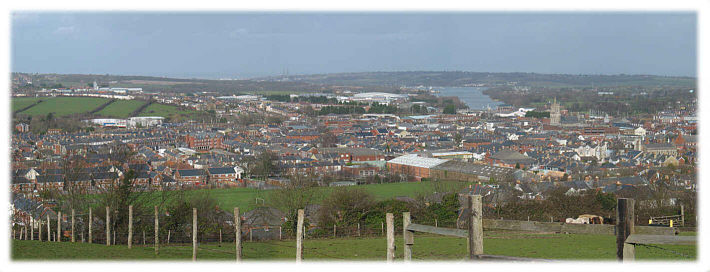

We
are affiliated to the
Federation of Recorded Music Societies
(President - Julian Lloyd Webber)
which has pages on the Web and supports all Societies
throughout the UK

Concerts are held Monday evenings at 7.00 p.m. at the
Sight
Concern Centre, Isle of Wight Society for the Blind,
Millbrooke House, Carisbrooke Road, Newport
For further information, Please contact:
Hon
Secretary Mrs. G M Realey
17 Bellecroft Drive, Newport
Click here for programme for 2021–2022
|
|